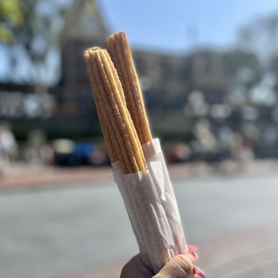

Disneyland Churros
A simple recipe for some overpriced costco churros aka Disneyland churros.
Ingredients
- Water
- Butter
- Kosher salt
- Ground Cinnamon
- All purpose flour
- Eggs
- Vegetable or canlola oil
- Granulated sugar
- Chocolate sauce for dipping if desired
Cooking instructions
- Combine water, butter, salt, and ¼ teaspoon cinnamon in 1 ½-quart saucepan over medium heat. Bring pot to rolling boil. Reduce heat to low.
- Add flour and stir vigorously until mix forms a ball. Remove from heat and let rest for 5-7 min.
- Add eggs, one at a time, and stir until combined. Set aside.
- Heat oil in medium skillet or 1-quart saucepan over medium-high heat or until temperature reaches 350˚.
- Spoon dough into piping bag fitted with large star tip. Pipe 1-inch strip of dough over saucepan, cut with knife, and drop into hot oil. Repeat until churro bites fill saucepan with room to fry. Fry churro bites until golden brown. Remove with slotted spoon or mesh spider strainer.
- Drain churro bites on paper towel. Mix sugar and ½ teaspoon cinnamon in medium bowl. Toss in churro bites until coated. Place on serving plate and serve with favorite dipping sauce.
- When the liquid comes to a boil, stir in flour. Dough will start to form.Continue stirring until dough forms. Let dough sit for 5-7 minutes to rest before adding eggs. Once dough has rested, add eggs one at a time, stirring until well combined.
- Place churro dough into piping bag with large star tip attached. Twist top of piping bag so you can push dough through tip easily. Notice where I snipped the bottom of my piping bag. The tip pushed through just past the opening. This way the churro dough will be easy to push through with a snug tip attached.
Now you're done. Next time just get it from costco for a $1.50